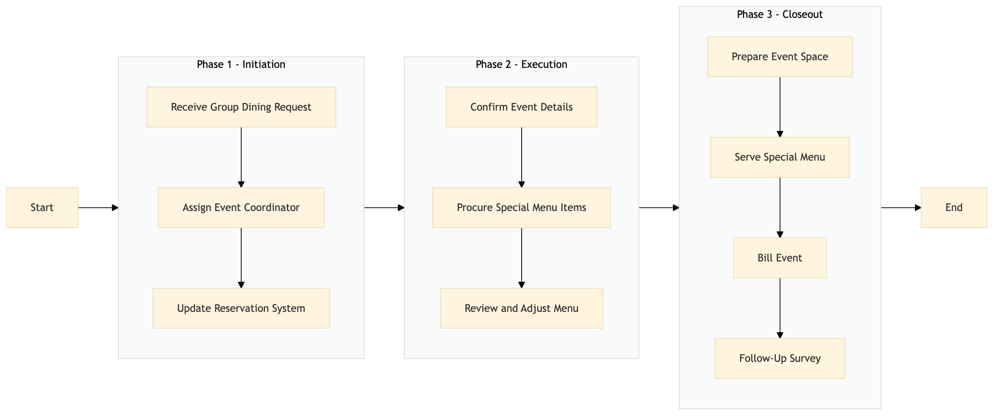

| Role | Steps |
|---|---|
| Front Desk Agent | 1.1 1.3 |
| Revenue Manager | 1.2 |
| Event Coordinator | 2.1 2.3 3.4 |
| Executive Chef | 2.2 |
| Executive Housekeeper | 3.1 |
| Waitstaff | 3.2 |
| Billing Specialist | 3.3 |
| Step | Name | Role | System | Input | Output | KPI | Dec? | Exc? | Pain Point / Risk |
|---|---|---|---|---|---|---|---|---|---|
| 1.1 | Receive Group Dining Request | Front Desk Agent | Oracle OPERA Cloud | Reservation request with group dining details | Updated reservation record in Oracle OPERA Cloud | Less than 3 minutes | N | Y | Handling last-minute requests |
| 1.2 | Assign Event Coordinator | Revenue Manager | Oracle OPERA Cloud | Updated reservation record | Event coordinator assigned to the group dining event | Less than 5 minutes | N | Y | Overbooking of events |
| 2.1 | Confirm Event Details | Event Coordinator | Oracle OPERA Cloud, IDeaS G3 RMS | Reservation details and guest preferences | Confirmed event details including menu, date, time, and venue | Less than 10 minutes | Y | N | Mismatch between client expectations and available resources |
| 2.2 | Procure Special Menu Items | Executive Chef | Birchstreet Procurement, Oracle OPERA Cloud | Special menu items list | Order placed for special menu items | Less than 2 hours | N | Y | Supply chain disruptions |
| 3.1 | Prepare Event Space | Executive Housekeeper | Oracle OPERA Cloud, Knowcross HotSOS | Confirmed event details | Event space prepared and cleaned | Less than 4 hours | N | Y | Equipment malfunctions |
| 3.2 | Serve Special Menu | Waitstaff | Oracle OPERA Cloud, Oracle MICROS Simphony | Confirmed event details and special menu items | Special menu served to guests | Less than 2 hours | N | Y | Guest dietary restrictions not met |
| 3.3 | Bill Event | Billing Specialist | Oracle OPERA Cloud, SAP S/4HANA | Event details and guest charges | Event bill generated and sent to the client | Less than 1 hour | N | Y | Incorrect billing |
| 3.4 | Follow-Up Survey | Event Coordinator | Marriott Bonvoy CRM, Oracle OPERA Cloud | Guest contact information | Follow-up survey sent to guests | Less than 24 hours | N | Y | Low response rates |
| 1.3 | Update Reservation System | Front Desk Agent | Oracle OPERA Cloud | Event details and status updates | Updated reservation record in Oracle OPERA Cloud | Less than 5 minutes | N | Y | Data entry errors |
| 2.3 | Review and Adjust Menu | Executive Chef | Oracle OPERA Cloud, Oracle MICROS Simphony | Guest feedback on special menu | Adjusted menu for future events | Less than 1 week | Y | N | Inconsistent guest satisfaction |
This process outlines the steps for managing group dining and special menus at a Marriott full-service hotel. It involves coordination between various departments to ensure smooth execution of banquets and events catering.